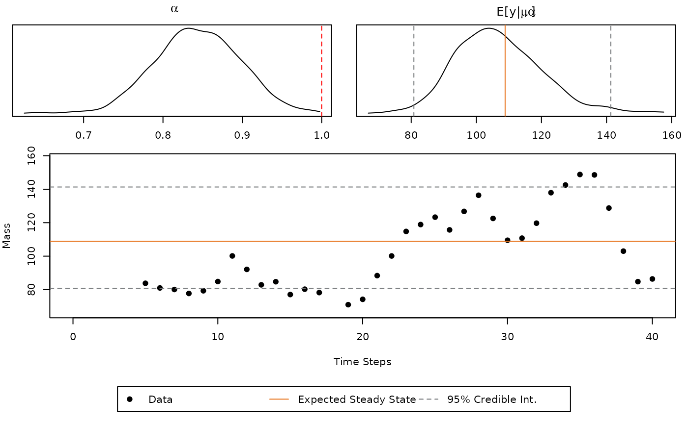

When looking over mass flow rate data from the individual stream of a process, such as the simulated data above, it is often unclear when the process achieved steady state as well as what the steady state mass flow rate is. Multiple engineers, each using different tools and reasoning, looking at this data will have different determinations. Inconsistencies in estimation can result in misleading conclusions when making process performance. Thus, there is a need to for a method consistently categorizing such data.
The ssEst function fills this gap, as well as provides
quantitative information on if the stream is at steady state in the
first place. The below auto-regressive model, with a lag of 1, is fit to
the data.
\[ y_t = \mu + \alpha y_{t-1} + \epsilon \]
Where \(\epsilon \sim
\mathcal{N}(0,\sigma^2)\). Using Bayesian inference,
ssEst function generates samples from the distribution of
the model parameters \(\mu\), \(\alpha\), and \(\sigma^2\). If \(|\alpha| < 1\) the model is considered
stationary or mean reverting. The behavior is predictable. It is
possible to calculate \(\mathbb{E}\lbrack
y\rbrack\) by the following equation:
\[ \mathbb{E}\lbrack y \rbrack = \frac{\mu}{1-\phi} \]
Getting started, the data set above was generated with the following code:
y <- rep(NA, times = 41)
y[1] <- 10
mu <- 20
alpha <- 0.8
sig <- 10
for(i in 2:length(y)){
y[i] <- mu + alpha * y[i-1] + rnorm(1)*sig
}Note, \(\alpha = 0.8\) implies the
process is stationary. Then the ssEst function is used on
these observed values.
fit1 <- ssEst(y)Since fit1 is a "BayesMassBal" object, it
can easily be passed to plot() so the output can be quickly
inspected.
plot(fit1)
One can see the density obtained from the samples of \(\alpha\). It is up to the engineer to decide if there is enough evidence to deem the trend stationary. If all of the samples of \(\alpha\) obtained are in the interval (-1,1), then the distribution for the estimation of steady state will also be calculated and displayed. In this case, only a small fraction of the samples of \(\alpha\) are outside of the valid range. It is likely the chain is stationary.
To inspect \(\mathbb{E}\lbrack y
\rbrack\) ssEst is rerun with the argument setting
stationary = TRUE. This setting specifies a prior
distribution on \(\alpha\) which forces
all samples to be within (-1,1) so that the steady state mass flow rate
can be calculated. Refitting and re-plotting gives:

The point \(\mathbb{E}\lbrack y
\rbrack\) can then be used in a classical point mass balance, or
some subset of the data can be used with the BMB()
function. One way to choose the time steady state of the system has been
achieved is using all data points after which the line for the Expected
Steady State has been crossed. Another method would be to use a subset
of samples of \(\mathbb{E} \lbrack y | \mu,
\alpha \rbrack\) with the BMB function.